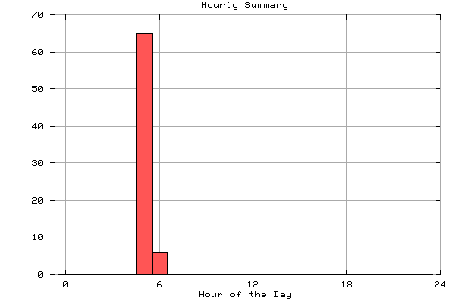

HTTP Server Hourly Summary
This report covers the day of 02/12/96.
All dates are in local time.
midnite: 0 : 1:00 am: 0 : 2:00 am: 0 : 3:00 am: 0 : 4:00 am: 0 : 5:00 am: 65 : ### 6:00 am: 6 : 7:00 am: 0 : 8:00 am: 0 : 9:00 am: 0 : 10:00 am: 0 : 11:00 am: 0 : noon: 0 : 1:00 pm: 0 : 2:00 pm: 0 : 3:00 pm: 0 : 4:00 pm: 0 : 5:00 pm: 0 : 6:00 pm: 0 : 7:00 pm: 0 : 8:00 pm: 0 : 9:00 pm: 0 : 10:00 pm: 0 : 11:00 pm: 0 :

Statistics generated at Mon Feb 19 03:20:17 MET 1996, (C) Schibsted Nett AS, 1995.